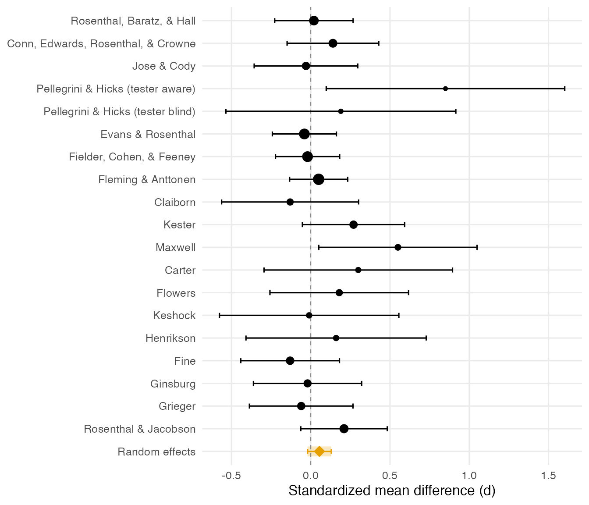

The Teacher Expectancy Meta-Analysis: Reproducing Raudenbush (1984)
Ken Kelley
2026-07-30
Source:vignettes/teacher_expectancy.Rmd
teacher_expectancy.RmdIn 1968, Pygmalion in the Classroom (Rosenthal &
Jacobson) reported that telling teachers certain randomly chosen
children were about to bloom intellectually raised those children’s IQ.
The single study (shipped in DMAR as pygmalion, and the
running analysis of covariance example in Maxwell, Delaney, and Kelley’s
Designing Experiments and Analyzing Data) set off fourteen
years of replications with wildly varying results. Raudenbush (1984)
synthesized 18 of those experiments and asked the question that resolved
the controversy: not whether there is an expectancy effect, but
why the studies disagree. His answer: the longer teachers had
known their pupils before the expectancy induction, the smaller the
effect. Credible deception is the Achilles’ heel of the design.
This vignette reproduces the paper’s analyses with DMAR’s synthesis functions, then reanalyzes the data with modern random effects machinery. The single Pygmalion study and this literature are deliberately kept as separate data sets: one is a famous experiment, the other is the evidence about the claim.
The Data
The 1984 Table 1, at the condition level (Pellegrini & Hicks ran a tester-aware and a tester-blind condition):
data(teacher_expectancy)
teacher_expectancy[, c("author", "weeks", "tester", "d", "p_one_tailed")]
#> author weeks tester d p_one_tailed
#> 1 Rosenthal, Baratz, & Hall 2 aware 0.02 0.401
#> 2 Conn, Edwards, Rosenthal, & Crowne 21 aware 0.14 0.206
#> 3 Jose & Cody 19 aware -0.03 0.791
#> 4 Pellegrini & Hicks (tester aware) 0 aware 0.85 0.003
#> 5 Pellegrini & Hicks (tester blind) 0 blind 0.19 0.242
#> 6 Evans & Rosenthal 3 aware -0.04 0.709
#> 7 Fielder, Cohen, & Feeney 17 blind -0.02 0.595
#> 8 Fleming & Anttonen 2 blind 0.05 0.224
#> 9 Claiborn 24 aware -0.13 0.928
#> 10 Kester 0 aware 0.27 0.050
#> 11 Maxwell 1 blind 0.55 0.002
#> 12 Carter 0 blind 0.30 0.043
#> 13 Flowers 0 blind 0.18 0.210
#> 14 Keshock 1 blind -0.01 0.528
#> 15 Henrikson 2 blind 0.16 0.250
#> 16 Fine 17 aware -0.13 0.877
#> 17 Ginsburg 7 aware -0.02 0.519
#> 18 Grieger 5 blind -0.06 0.637
#> 19 Rosenthal & Jacobson 1 aware 0.21 0.016For the analyses with the 18 studies as units, Raudenbush
merged the two Pellegrini and Hicks conditions into their study-level
values (d = 0.52, one-tailed p = .010; see
?teacher_expectancy):
s <- teacher_expectancy[-c(4, 5), ]
d18 <- append(s$d, 0.52, after = 3)
p18 <- append(s$p_one_tailed, .010, after = 3)
wk18 <- append(s$weeks, 0, after = 3)
ne18 <- append(s$n_experimental, 22, after = 3)
nc18 <- append(s$n_control, 22, after = 3)
round(c(mean = mean(d18), sd = sd(d18), max = max(d18), min = min(d18)), 2)
#> mean sd max min
#> 0.11 0.20 0.55 -0.13These match the paper’s summary exactly (M = 0.11, SD = 0.20, range 0.55 to -0.13).
Are the Studies Significant in Combination? (Table 2)
Raudenbush opened with four classical combined significance tests,
which combine_p() provides in one call. The weights for the
Mosteller-Bush weighted method are the studies’ degrees of freedom:
df18 <- ne18 + nc18 - 2
combine_p(p18, weights = df18)| term | value |
|---|---|
| fisher_chi_square | 62.2 |
| fisher_df | 36 |
| fisher_p | 0.0043 |
| edgington_sum_p | 7 |
| edgington_p | 0.0509 |
| stouffer_z | 2.2 |
| stouffer_p | 0.0139 |
| stouffer_weighted_z | 0.87 |
| stouffer_weighted_p | 0.1922 |
| k | 18 |
Three of the four reject the joint null (the paper’s values: Fisher chi square(36) = 62.17, Edgington sum 6.84, adding-Zs z = 2.12). The df-weighted test does not (z = 0.87). That disagreement is the first finding: the larger studies found smaller effects, so something about the studies, not just sampling error, drives the variation.
Why Do the Studies Disagree? The Prior-Contact Contrast
The paper’s central hypothesis: the more weeks teachers had known their pupils before the induction, the less credible the deception, the smaller the effect.
plot(d18 ~ wk18,
xlab = "Weeks of teacher-student contact before induction",
ylab = "Effect size d", pch = 16)The raw correlation and Raudenbush’s linearized (reciprocal-transformed) version:
round(c(r = cor(d18, wk18),
r_transformed = cor(-1 / (1 + d18), -1 / (2 + wk18))), 2)
#> r r_transformed
#> -0.55 -0.76(The paper reports -.55 and -.77.) The formal test is a Rosenthal-Rubin contrast among the effect sizes, with weights inversely proportional to weeks of prior contact and the standard large-sample variance for each d:
v18 <- (ne18 + nc18) / (ne18 * nc18) + d18^2 / (2 * (ne18 + nc18))
meta_contrast(d18, v18, weights = 1 / (wk18 + 2))
#> Contrast weights mean-centered to sum to zero.| term | value |
|---|---|
| estimate | 0.432 |
| se | 0.156 |
| z | 2.76 |
| p_value | 0.0057 |
| k | 18 |
The z of about 2.75 (one-tailed p = .003 in the paper) supports the hypothesis. Raudenbush partitioned the total heterogeneity the way an ANOVA partitions sums of squares: the fixed effect fit gives Cochran’s Q,
| term | value |
|---|---|
| Q | 14.9 |
| Q_df | 17 |
| Q_p | 0.5997 |
Confidence level: 95%
and the squared contrast statistic over Q is the proportion of heterogeneity the moderator explains (Raudenbush’s 52 percent; the package returns 0.51 from these inputs):
z_contrast <- meta_contrast(d18, v18, weights = 1 / (wk18 + 2))$value[3]
#> Contrast weights mean-centered to sum to zero.
round(z_contrast^2 / fe$value[fe$term == "Q"], 2)
#> [1] 0.51Note the instructive subtlety: the omnibus Q (14.9 on 17 df) would not itself reject homogeneity. A diffuse test looked at the same data and saw nothing; the focused contrast, specified in advance from a substantive hypothesis, saw the structure. That lesson, prefer focused model comparisons to omnibus tests, is the same one Maxwell, Delaney, and Kelley (2027) teach for single studies.
Low- Versus High-Contact Studies (Table 3)
Dichotomizing at two weeks of prior contact:
lo <- wk18 <= 2
round(c(mean_low = mean(d18[lo]), mean_high = mean(d18[!lo])), 2)
#> mean_low mean_high
#> 0.22 -0.04
combine_p(p18[lo], weights = df18[lo]) # 10 low-contact studies| term | value |
|---|---|
| fisher_chi_square | 54.2 |
| fisher_df | 20 |
| fisher_p | < 0.0001 |
| edgington_sum_p | 1.73 |
| edgington_p | 0.0002 |
| stouffer_z | 4.15 |
| stouffer_p | < 0.0001 |
| stouffer_weighted_z | 2.52 |
| stouffer_weighted_p | 0.0059 |
| k | 10 |
combine_p(p18[!lo], weights = df18[!lo]) # 8 high-contact studies| term | value |
|---|---|
| fisher_chi_square | 7.98 |
| fisher_df | 16 |
| fisher_p | 0.9494 |
| edgington_sum_p | 5.26 |
| edgington_p | 0.9389 |
| stouffer_z | -1.34 |
| stouffer_p | 0.9104 |
| stouffer_weighted_z | -0.786 |
| stouffer_weighted_p | 0.7842 |
| k | 8 |
Every method finds the low-contact studies jointly significant (the paper: adding-Zs z = 4.16, weighted 2.52); none finds anything in the high-contact studies. Expectancy effects appear when, and only when, the teachers barely knew the children.
Tester Awareness (the Condition-Level Rows)
Could the effect be tester bias? Here the two Pellegrini and Hicks conditions matter, so the analysis runs at the condition level with an aware-versus-blind contrast:
d <- teacher_expectancy$d
ne <- teacher_expectancy$n_experimental
nc <- teacher_expectancy$n_control
vi <- (ne + nc) / (ne * nc) + d^2 / (2 * (ne + nc))
aware <- teacher_expectancy$tester == "aware"
meta_contrast(d, vi, weights = ifelse(aware, 1 / sum(aware),
-1 / sum(!aware)))| term | value |
|---|---|
| estimate | -0.0349 |
| se | 0.103 |
| z | -0.338 |
| p_value | 0.7351 |
| k | 19 |
No main effect of tester awareness (the paper reports z = -0.36), and the low-contact effect held in both the aware and blind subsets: the prior-contact moderator is not an artifact of who administered the test.
A Modern Reanalysis
Raudenbush worked with the tools of 1984. The same questions today
get a random effects model with REML, the Hartung-Knapp adjustment, a
Q-profile interval for the between-study variance, and a prediction
interval, all of which meta_smd() reports in one table
(Hedges’ small-sample correction is on by default; the historical
analyses above pooled raw d values):
meta_smd(smd = teacher_expectancy$d,
n_1 = teacher_expectancy$n_experimental,
n_2 = teacher_expectancy$n_control)| term | value |
|---|---|
| estimate | 0.0544 |
| se | 0.0352 |
| t | 1.55 |
| p_value | 0.1392 |
| lower_limit | -0.0195 |
| upper_limit | 0.128 |
| prediction_lower | -0.0198 |
| prediction_upper | 0.129 |
| tau2 | 0 |
| tau2_lower | 0 |
| tau2_upper | 0.048 |
| tau | 0 |
| I2 | 0 |
| I2_lower | 0 |
| I2_upper | 64.6 |
| H2 | 1 |
| Q | 16.7 |
| Q_df | 18 |
| Q_p | 0.5468 |
| k | 19 |
Confidence level: 95%
And the picture (the forest plot pools the raw d values, so its diamond sits fractionally left of the Hedges-corrected average in the table above):
plot_forest(d, vi, labels = teacher_expectancy$author,
xlab = "Standardized mean difference (d)")
#> `height` was translated to `width`.
The pooled average is small and its confidence interval narrow, but the summary that respects the heterogeneity is conditional: pooling everything answers a question (“what is the average effect across these heterogeneous inductions?”) that the moderator analysis showed is the wrong one. Where will the next study land? It depends almost entirely on when the expectancy is induced.
References
Raudenbush, S. W. (1984). Magnitude of teacher expectancy effects on pupil IQ as a function of the credibility of expectancy induction: A synthesis of findings from 18 experiments. Journal of Educational Psychology, 76(1), 85–97.
Raudenbush, S. W., & Bryk, A. S. (1985). Empirical Bayes meta-analysis. Journal of Educational Statistics, 10(2), 75–98.
Rosenthal, R., & Jacobson, L. (1968). Pygmalion in the classroom. Holt, Rinehart & Winston.
Maxwell, S. E., Delaney, H. D., & Kelley, K. (2027). Designing experiments and analyzing data: A model comparison perspective (4th ed.). Routledge.